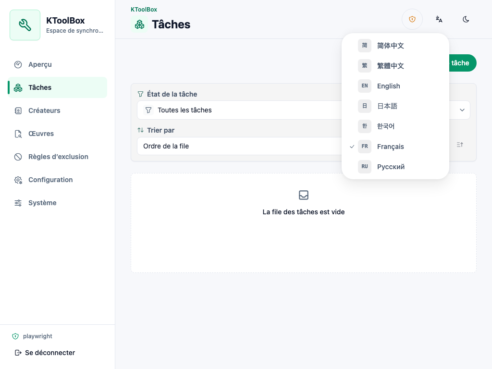
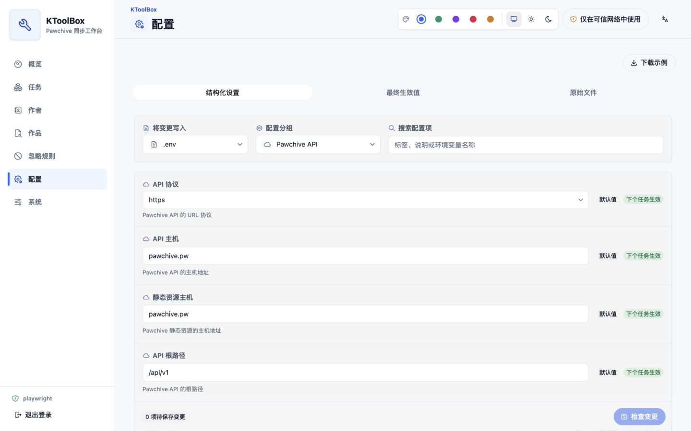
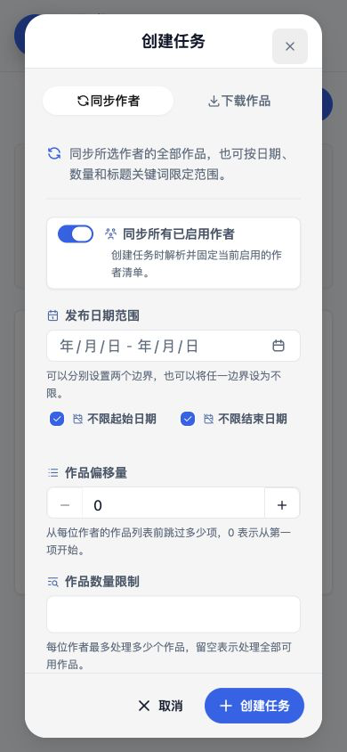
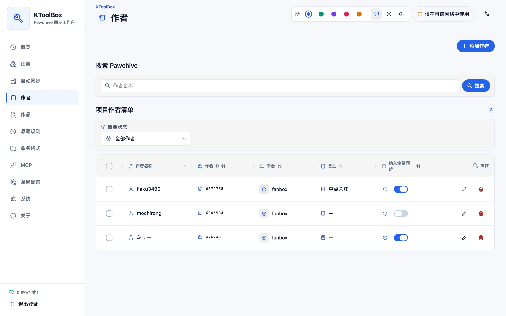
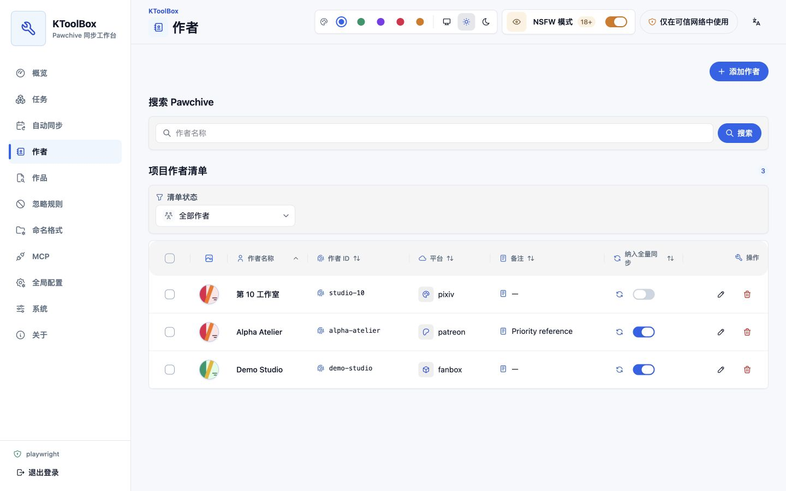
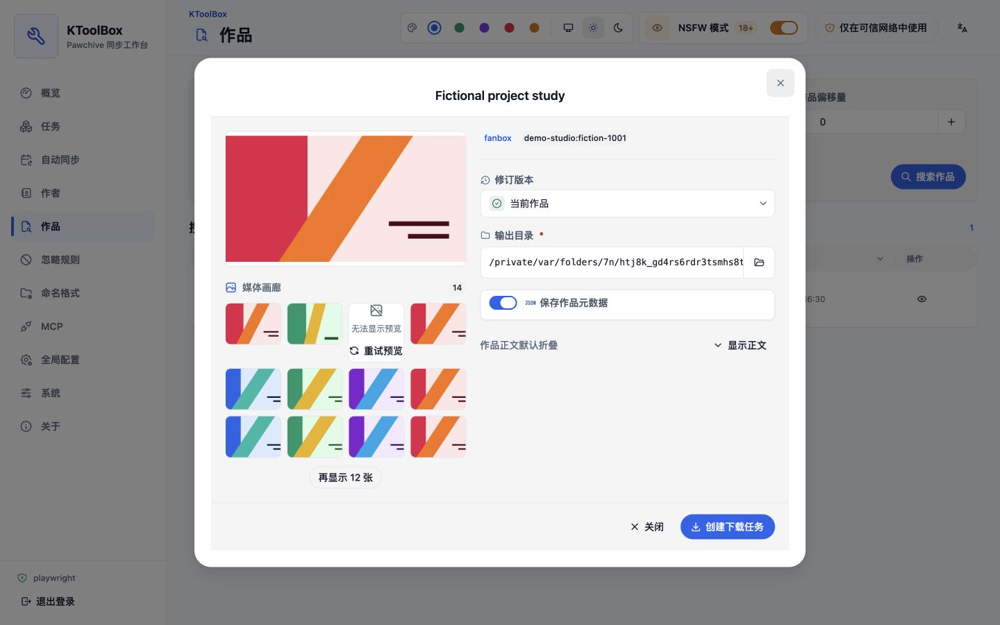
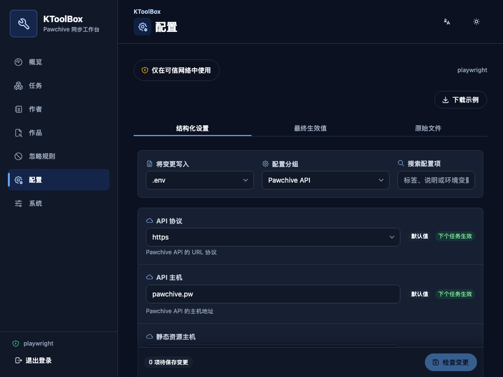
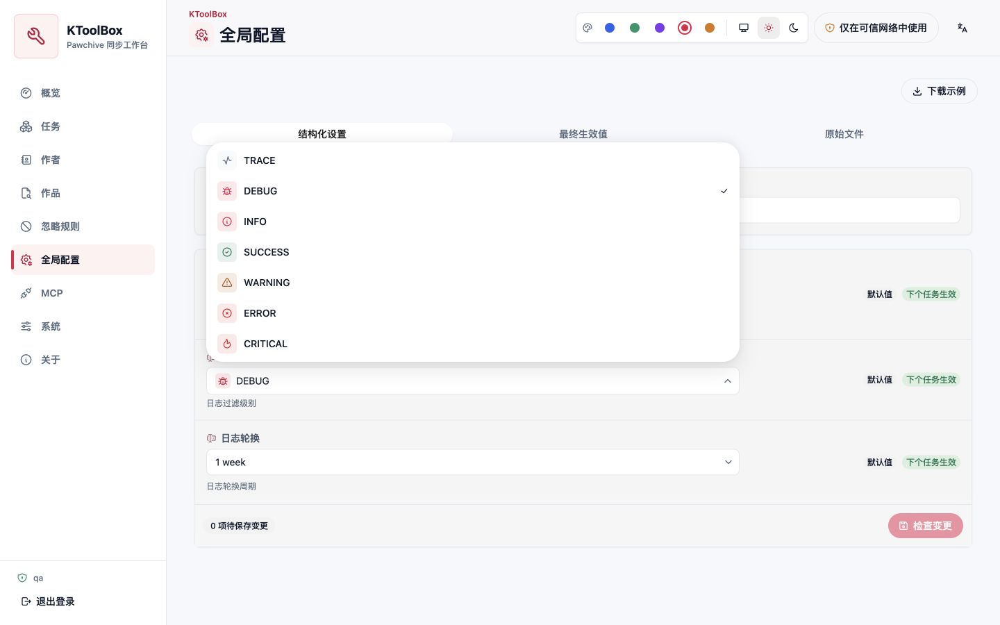
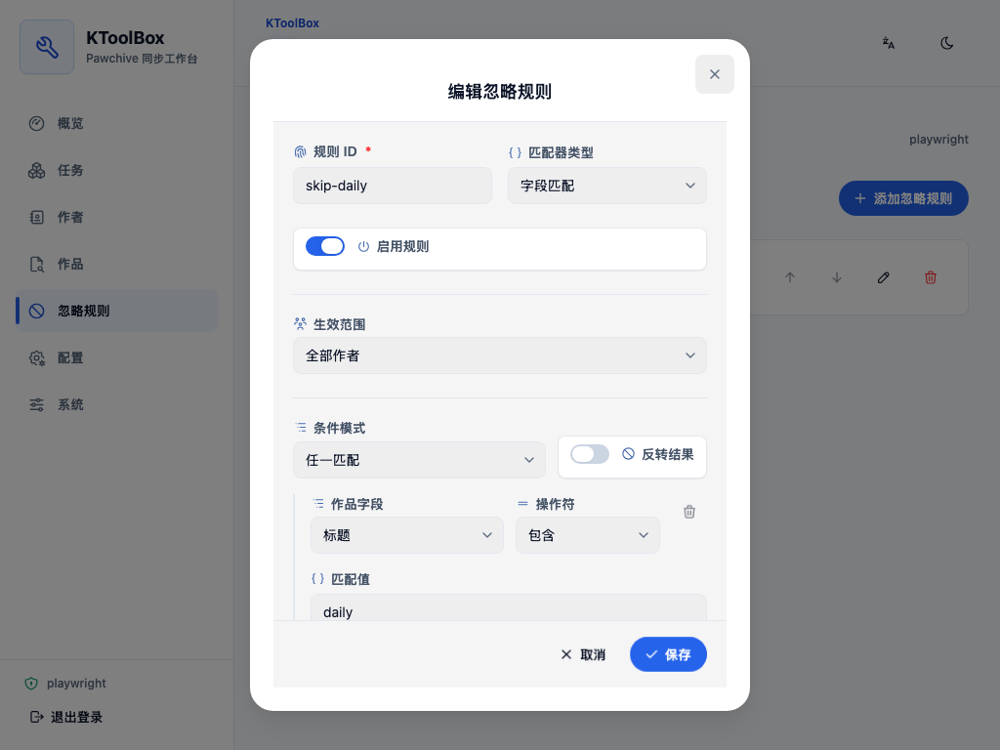

WebUI 项目工作流¶
WebUI 安装并绑定项目后，可通过本页管理项目数据与设置；任务执行和部署信息分别放在专门指南中。
项目工作流¶
首次访问会跟随浏览器语言，并可持久切换简体中文、繁体中文、英语、日语、韩语、法语或俄语。切换语言时，React Aria 日期、数字格式、自然排序、配置元数据、表单校验和已知服务端错误会一并更新。主题默认跟随系统，也可固定为浅色或深色；界面提供蓝、绿、紫、玫红和琥珀五套强调色，而表单开关在启用时始终保持蓝色，避免主题变化干扰状态识别。桌面端使用紧凑侧栏，窄屏使用 Drawer。


可编辑区域使用柔和的次级表面，输入控件具有独立的字段背景；字段图标便于快速扫描，表单开关与复选框则和标签一起靠左排列，不会表现成居中的操作按钮。开关关闭时使用灰色轨道、开启时使用蓝色轨道；复选框仅在选中或不确定状态显示标记。可编辑弹窗的内容与固定操作栏共用一张连续表面。
主要页面包括：
- 概览： 项目路径、队列状态、活动传输统计和近期任务；每张统计卡都是可通过键盘访问的链接，可直接进入对应的任务或作者筛选视图。
- 任务： 创建、编辑、暂停、恢复、停止、重新运行、删除并查看同步或单篇下载；也可选择多项执行兼容的批量操作。只有可读任务目标链接会进入详情，操作控件不会误触导航。
- 自动同步： 创建多个定期作者同步计划，查看最近更新数量与运行历史，暂停计划或立即执行。
- 作者： 搜索 Pawchive，并新增、编辑备注、启停或移除清单项，支持批量启用、停用和移除。
- 作品： 搜索作品、查看修订并创建下载任务；仅在用户明确开启 NSFW 模式后显示图片预览，正文仍默认折叠。
- 忽略规则： 排序
field-match规则、设置作用域，并组合嵌套any/all、包含、等于、正则和存在条件。 - 全局配置： 使用类型化表单或高级原文视图编辑
.env、prod.env与ktoolbox.toml。 - 系统： 查看项目与应用版本，并下载环境配置示例。
- 关于： 查看 KToolBox 版本、许可证、运行环境、作者、文档、源代码仓库与问题反馈入口，不显示作者邮箱。


创建任务使用两个固定标签，不会出现多余的滚动按钮。同步日期保留为官方 HeroUI 的单个 year/month/day - year/month/day 范围字段，同时允许“不限起始日期”和“不限结束日期”分别清空任一边界；作品偏移量始终以 50 为步长。标题筛选以可删除的 HeroUI Chip 展示，输入中英文逗号或回车即可添加。单个作品下载和新增作者使用独立 HeroUI 字段，并以代码样式的 /platform/user/creator/post/post 路径片段分隔，不再把分隔符伪装成输入控件。
平台字段使用 HeroUI ComboBox，内置 Patreon、Pixiv 与 Fanbox 建议，同时允许输入任意自定义平台。选项较少且含义明确的下拉项会显示图标；颜色只用于状态、警告和危险等真实语义。
桌面表格与移动条目均以 Pawchive Profile 返回的作者名称为主身份。名称缓存 24 小时，刷新失败时继续使用旧值；从未成功获取名称时才回退到作者 ID。备注保持独立且默认留空。编辑已有作者时，平台和作者 ID 保持可见但只读，因为两者共同标识项目清单中的条目。
概览近期任务、任务队列、作者清单和作品结果均支持受控 HeroUI 排序。文本使用支持中文与自然数字的本地化顺序，数量、进度、速度、状态和时间按真实值排序；移动卡片提供相同的排序字段与升降序控制。任务自定义排序只改变显示顺序，不会改变调度顺序。
可选敏感媒体预览¶
每个新浏览器中的 NSFW 模式都默认关闭。关闭时作者和作品页面保持纯文本，不发起图片请求，也不为媒体保留空白。每次开启都必须确认；开启后状态保存在当前浏览器中并跨标签页同步，直到用户主动关闭。
浏览器只通过经过登录认证的 WebUI 同源代理获取媒体，不会直连 Pawchive 文件主机。代理会完整解码并验证位图，拒绝重定向、SVG、非图片、损坏文件以及超过 32 MiB 或 50 MP 的资源，并生成有界缩略图。开启后可显示作者头像与横幅、作品封面、图片附件和受支持的正文图片；画廊每次加载 12 张，查看器支持方向键与 Escape。视频、压缩包和其他附件继续保持纯文本。


自动同步¶
“自动同步”页面支持多个计划、按作者多选、五段 Cron，以及最短 15 分钟且具有固定锚点的间隔计划。每个计划包含 IANA 时区、首次运行边界、输出选项和未来三次执行预览。立即执行复用同一任务队列，成功作者会推进检查点，但不会改变间隔计划原有时间轴。
自动检查优先使用 Pawchive 具有 UTC 语义的 added 时间，并在上次成功检查点前重叠 24 小时；项目级去重会阻止多个计划重复统计同一作品。首次不限日期运行只建立基线，不会把全部历史作品显示为新增。KToolBox 停止期间错过的执行会被跳过，同一计划已有活动任务时也不会重复触发。调度、检查点和恢复细节详见自动同步指南。
项目命名¶
命名设置与默认输出位置保存在项目 ktoolbox.toml 中，由 CLI、WebUI、MCP、作品下载与自动同步共同使用。“命名格式”页分别保存目录结构和模板；可复用的旧目录转换器支持多选已保存格式或粘贴旧 .env/TOML，始终以当前项目格式为只读目标且不持久化粘贴原文。它只扫描用户明确选择的位置，不访问 Pawchive，并支持暂停、继续或回滚。旧位置绝不会成为未来任务的下载目录。继承规则、旧配置迁移向导和恢复细节详见命名格式指南。
配置编辑¶
表单标签与说明使用明确的本地化文本，而不是 Python 标识符。英文配置类的 :ivar field: docstring 仍是字段语义来源；经过完整性检查的语言目录为七种语言提供全部标签与说明，类型、默认值、范围和秘密属性来自 Pydantic。
日志级别等固定选项使用带图标的 HeroUI Select；编码、日志轮换等“有推荐值但允许自定义”的字段使用 ComboBox。attachments、content.txt、external_links.txt 等作品内部名称保持普通文本输入，只有真正的文件系统位置才提供远程路径选择器。
文件系统路径字段仍可手动编辑，并提供浏览按钮。对话框展示的是运行 KToolBox 的远程计算机，而不是浏览器所在设备；其中包含已本地化的快捷位置、面包屑、搜索、带清晰标签的隐藏项目开关、分页、独立的新建目录弹窗，以及经过确认的空目录删除。选择后，项目相对配置值继续保持相对路径，任务和作品输出目录继续使用绝对路径；被进程环境覆盖的只读字段无法打开选择器。
.env 与 prod.env 标签会显示最终生效值及来源 Chip。被进程环境覆盖的字段只读，秘密值默认遮蔽；高级原文编辑会额外提示可能暴露秘密。
保存前，服务端会解析、校验候选文件并返回语义差异。保存使用 ETag 拒绝过期编辑，并以原子替换落盘。TOML 编辑沿用现有 TomlKit/Pydantic 存储，因此结构化修改作者与忽略规则时会保留注释。


